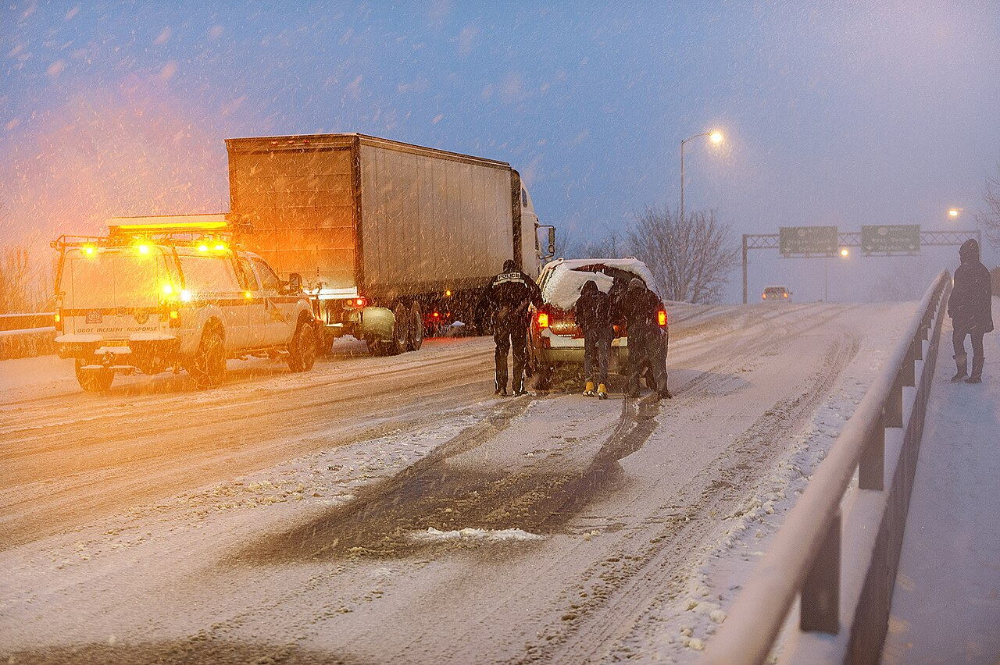

Stuck in Snow? The Right Way to Get Out (and What NOT to Do)
Flooring a stuck car digs the hole deeper. The way out is rocking, traction, and patience.

Photo: Oregon Department of Transportation, CC BY 2.0, via Wikimedia Commons
Flooring it digs you deeper. Rocking, traction, and patience get you out. The full stuck-in-snow playbook, step by step.
The wheels are spinning, the car isn't moving, and the smell of hot rubber is starting to fill the air. You're stuck. What you do next decides whether you're free in five minutes or waiting an hour for a tow truck — and whether your transmission survives the experience. Most people do exactly the wrong thing first, and the wrong thing makes the hole deeper.
Why it's wrong
Flooring the accelerator is the instinct, and it's the worst move available. A spinning tire melts the snow beneath it into a polished ice rut, digs itself deeper with every revolution, and can overheat your transmission — especially automatics, which build heat fast when the wheels spin and the car doesn't move. Holding the throttle down for minutes at a time can cook a transmission. The second mistake is not getting out to look: you can't fix a stuck car from the driver's seat if you don't know which wheels are buried, which way is clear, or whether the exhaust pipe is blocked. And the third mistake is pride — refusing to call for help when the car is truly buried, and spending an hour making it worse instead.
The right way
- Stop spinning immediately. If the car isn't moving after a second or two of gentle throttle, take your foot off. Every spin makes the hole deeper and the ice smoother.
- Get out and clear the snow. Shovel or kick the snow away from all four tires, especially in front of the drive wheels, and clear a path a metre or two ahead. Clear the exhaust pipe first — a blocked exhaust pushes carbon monoxide into the cabin while the engine runs.
- Turn off traction control. Traction control cuts engine power when it detects wheel spin — exactly when you're trying to build momentum. There's usually a button on the dashboard. Turn it back on once you're rolling.
- Rock the car. Shift to drive, roll forward gently until the car stops, then immediately reverse and roll back, then drive again — building a little more momentum each time, like a swing. Gentle and rhythmic, never slamming between gears.
- Add traction under the drive wheels. Sand, cat litter, gravel, a traction mat — or your floor mats, tread-side down, jammed under the tires. Anything the tire can bite instead of polished ice.
- Straighten the steering wheel. A turned wheel adds resistance. Keep the wheels pointing straight ahead while you rock.
- Know when to stop. If the car is buried to the axles, or rocking and traction haven't worked after a few minutes, stop. You're overheating the transmission. Put the hazards on, stay with the car, and call for help.
The rundown
Stop spinning, clear the snow and the exhaust, traction control off, rock gently, add grip under the tires. And know when to call it — a tow truck is cheaper than a transmission. The five minutes a plowed route adds is always cheaper than the hour a tow takes, so the best unstuck is the one you avoid by not driving into a drift you can't see the bottom of.
← Back to the emergency kit guide
Watch: Car stuck in snow? How to get your car unstuck | Driving Advice | Driving.ca
🎒 Be ready next time FREE TOOL
A shovel and sand in the trunk turn this into a 10-minute job. The Winter Kit Builder makes you a personal emergency-kit checklist in 30 seconds.

.jpg){kind=link}